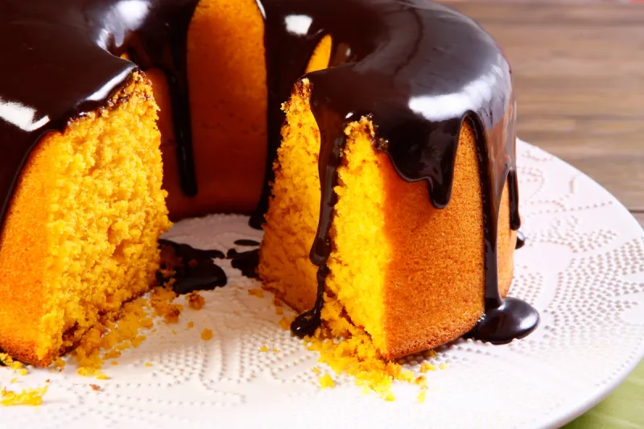

Manchetes
Reportagens
Mundo do Trabalho
Culinária
Entretenimento
Culinária
Indústrias alimentícias pelo mundo
Conheça um pouco sobre as indústrias mais conhecidas do mundo
Química nos alimentos
Descubra as reações químicas que acontecem na produção de alimentos
Foodtechs e seus objetivos
Descubra o que são foodtechs e conheça um pouco sobre a Fazenda Futuro
Torta de Frango
Aprenda a fazer uma torta de frango deliciosa para uma refeição em família

Bolo de Cenoura
Veja uma receita fácil para um bolo de cenoura
Brownie Cremoso
Aprenda a fazer um brownie cremoso fácil
Confira, vaga de emprego e oportunidade unica!
Veja mais!
Capitalismo
Descobrindo Caminhos Profissionais
Desvendando a inteligência emocional